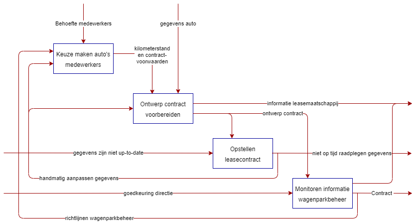
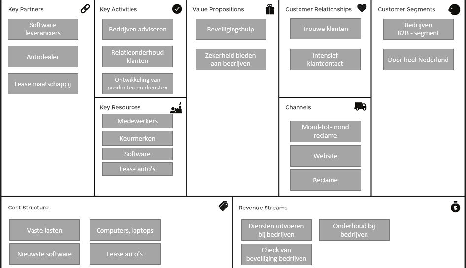
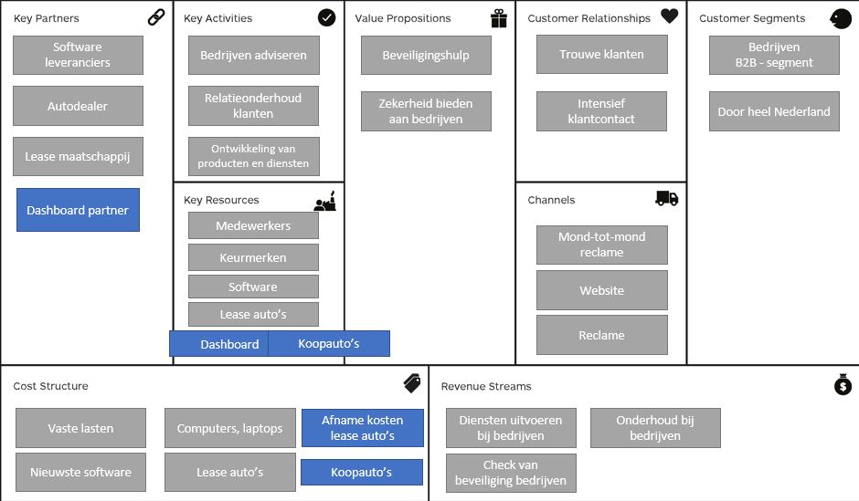

SqEME IT Support Groep
Tijdens mijn studie bedrijfskunde heb ik een project uit mogen voeren bij IT Support Groep in Tilburg. Deze organisatie legt vooral de focus op het adviseren aan bedrijven over hoe het met de beveiliging van hun IT-omgevingen gaat, en het helpen van deze bedrijven met het implementeren van deze beveiliging.
IT-Support telt 55 medewerkers en het is een groeiend bedrijf. Een aantal van de medewerkers rijdt in leaseauto’s van de zaak. Dit is een enorme kostenpost voor het bedrijf. Er zijn negentien leaseauto’s en twee koopauto’s in het wagenpark. We hebben voor de organisatie onderzocht hoe we de informatie die hierover beschikbaar is kunnen verbeteren.

Als er een nieuwe medewerker wordt aangenomen bij het bedrijf of als een contract afloopt, wordt er een nieuw contract opgesteld voor het leasen van een auto. De medewerkers geven hun behoeften door op basis van de richtlijnen van het wagenparkbeheer.
Er is goedkeuring van de directie nodig om het contract te ondertekenen en de auto in gebruik te nemen.
De HR-medewerker zorgt voor het monitoren van de informatie van het wagenparkbeheer.
Als medewerkers veel gebruik maken van de auto’s, is het voordeliger om een koopauto aan te schaffen dan een leaseauto aan te schaffen.
Het SqEME proces van IT-Support laat zien dat er veel misgaat in het proces. De gegevens over bijvoorbeeld het aantal gereden kilometers worden momenteel handmatig door elke medewerker ingevoegd in SharePoint. Dit zorgt ervoor dat de gegevens niet accuraat zijn en niet up-to-date zijn. Als er fouten in de gegevens zitten, wordt dit handmatig aangepast door de HR-medewerkers, maar omdat dit handmatig gaat komen er hier ook veel fouten door. De medewerkers vullen de kilometerstanden momenteel jaarlijks in. Ook heeft de directie hierdoor geen accuraat overzicht van de auto’s en de kilometerstanden. Waardoor de directie geen inzicht heeft in hoeverre hij kosten kan besparen met betrekking tot het wagenparkbeheer.
Nieuwe SqEME De procesflow gaat nu dus langs de medewerkers, de HR-medewerker en de directie. Bij IT-Support zou een dashboard met een overzicht voor de directie een oplossing zijn. De medewerkers gaan in het nieuwe proces hun kilometerstanden maandelijks doorgeven. Ook heeft directie dankzij het dashboard direct toezicht op de aanpassingen betreft het wagenparkbeheer. Hierdoor kan de directie eerder in het proces een afweging maken of de auto geleased of gekocht wordt. Dit zal veel gaan schelen in de kosten van het bedrijf. Ook kunnen de HR-medewerker en de directie zich meer gaan focussen op primaire processen binnen het bedrijf, omdat de processtroom in de nieuwe situatie foutloos zal verlopen, hierdoor is de doorlooptijd een stuk lager.
Door het dashboard zal de goedkeuring van de directie nu sneller plaatsvinden. Omdat er duidelijk op het dashboard wordt aangegeven of de keuzes van de auto’s wel of niet voldoen aan de richtlijnen. Ook kan de directie in een oogopslag zien welke medewerker er over het aantal kilometers heen zit en of het voordeliger is om te kopen in plaats van te leasen.
De kans dat het bedrijf gebruik zal maken van deze technologische implementatie is groot. De investering van een goed werkend dashboard hoeft niet duur te zijn. Ook kan het bedrijf veel kosten besparen dankzij het dashboard. De kosten die op lange termijn bespaard worden dankzij het dashboard, is een goede return on investment.
Huidige en nieuwe BMC IT Support Groep

Huidige BMC

Nieuwe BMC
Toelichting verandering BMC
In het nieuwe BMC is te zien dat er bij key partners staat dat er een partner voor de aanlevering van het dashboard zal komen. Dit zou eventueel ook door een handige medewerker van IT-Support gedaan kunnen worden. Als dit het geval is zal deze medewerker verantwoordelijk worden voor onderhoud en actueel houden van de functies van het dashboard, deze medewerker zal hier ook het aanspreekpunt van worden. Omdat dit nogal wat extra werkzaamheden zijn, is het een belangrijke overweging om een extern bedrijf hiervoor in te schakelen.
Daarnaast zijn bij key resources 2 nieuwe onderdelen. Namelijk het dashboard en koopauto's. Als uit het dashboard blijkt dat er veel kosten bespaard kunnen worden door de aanschaf van koopauto's in plaats van leaseauto's, zullen er aanzienlijk meer koopauto's komen in het bedrijf. Ook is het dashboard een belangrijke key resource.
Dankzij het aanschaffen van het dashboard, zullen de kosten van de leaseauto's afnemen, wel zullen er nieuwe kosten komen voor de koopauto's. De kosten van de koopauto's zijn een eenmalige investering, dus deze kosten komen niet elke maand terug. Er is bij de koopauto's wel sprake van afschrijvingskosten.
Extra verdienmodel dankzij het dashboard
Als de directie merkt dat het werken met het dashboard goed gaat, kan de directie ervoor kiezen om nog meer onderwerpen op het dashboard bij te houden. Denk hierbij aan het relatieonderhoud van klanten. Als het dashboard aangeeft dat er al lang geen contact is geweest met een bepaalde klant, kan de directie dit in één oogopslag zien en hier direct op inspelen. Dit is maar een van de vele mogelijke toepassingen van een dashboard.